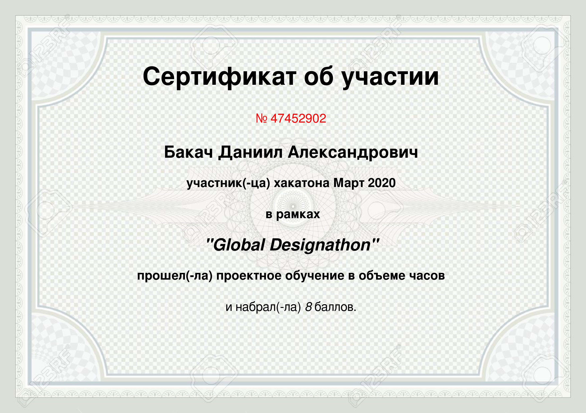
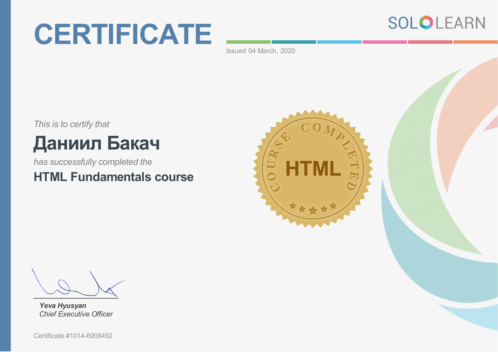
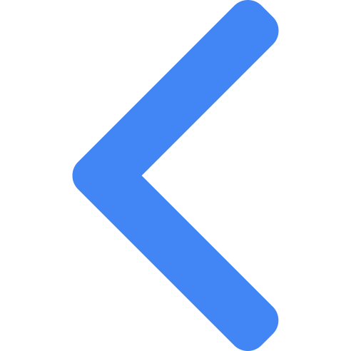
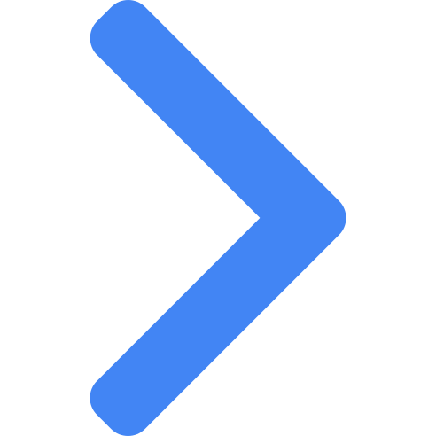

Я ищу место для летней практики с последующим трудоустройством
Обо мне
Я студент 3-го курса Белорусского национального технического университета. Обладаю стойким, уравновешенным характером. Не склонен к конфликтам. Креативен. Стрессоустойчив. Умею работать в команде. Добросовестно отношусь к выполнению поставленных задач. В свободное время занимаюсь повышением профессионального уровня. Также постоянно стараюсь совершенствовать полученные навыки и получать новые знания.
Образование — всего лишь лестница для сбора плодов с древа познания, а не сами эти плоды.
Средняя школа №147 г.Минска
Профильный класс по математике и истории
Средний балл при выпуске: 9.3
Белорусский национальный технический университет
Специальность: интегральные сенсорные системы
2018-2022
Средний балл за последний семестр: 9.3
Курсы
Курсы Sololearn
Данные курсы дали мне основные знания в HTML, CSS, JavaScript
Программа Udemy
Эта программа позволила освоить современные подходы к Web - разработке и закрепила знания, полученные из курсов Sololearn
Знания — это то, что наиболее существенным образом возвышает одного человека над другим.
Языки
Английский
Русский
Белорусский
HTML и CSS
HTML5
CSS3
Методология БЭМ
SASS/SCSS
Flexbox
CSS Grid
Фреймворки
Bootstrap
React
Redux
jQuery
Могут вас заинтересовать
Git
Zeplin/Avocode/Figma
Сборщик пакетов Gulp
Другие
Photoshop
LabVIEW
Solidworks
Fusion360
Autocad
Связаться со мной
Человек, который смог сдвинуть гору, начинал с того, что перетаскивал с места на место мелкие камешки.
Uber777.Moscow
Создан на основе шаблона при обученни Bootstrap grid
Лучшая награда в нашей жизни— это возможность заниматься делом, которое того стоит.
Участие в мероприятиях и соревнованиях
Бронзовый призер IV Республиканского конркурса профессионального мастерства "WorldSKills" 2020 в компетенции "мобильная робототехника"
Участие в конкурсе студенческих работ на тему: "Аппаратно-программная оптико-электрическая система на основе Arduino и LabVIEW"
Участие в Республиканской научно-технической конференции "Интеллектуальные системы" с докладом:"Акустическая сенсорная система для контроля измерения расстояния"
Участие в международных инженерных играх "World Engeneering competitions"
Сертификаты и дипломы
 


Contact me
Вы можете связаться со мной любым удобным для вас способом